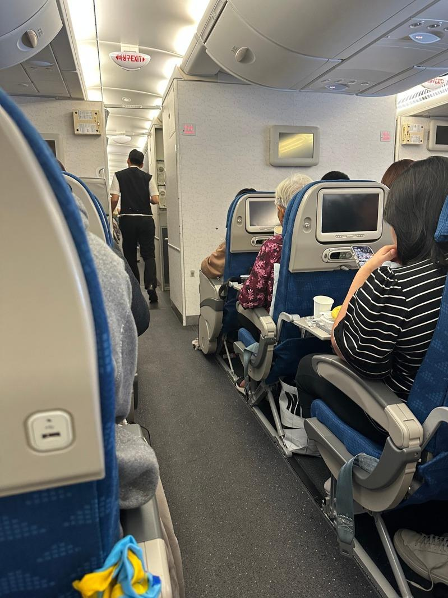

这个东西千万不要在飞机上喝、这个动作真的很恶！让空服员高兴的投资回报率超高以及头等舱的快乐谁懂？美国Kalitta Air波音747的机长丁毓麟分享飞机旅行背后的秘辛，事实可能会超出你的想像。
2016年从医学博士华丽转身为飞机机长的丁毓麟多年飞行，了解太多背后不为人知的事。他说，飞机上很多颠覆常识的事情，第一件就是飞机上的热水尽量不要喝，很多旅客尤其是华人喜欢喝热茶吃方便面，殊不知飞机上的水箱多久清洗一次以及用什么清洗真的没人知道。飞机每过一段时间都会去清洗，但冲洗过程是否按照流程无人知晓，尤其是水箱的清洗结果无法判定是否干净。所以他都是自带瓶装水和咖啡机，想喝热茶宁可用瓶装水在微波炉里加热也绝对不会用水箱的水。飞机上最安全的饮用水是瓶装水，不建议用水箱的水冲咖啡热茶方便面。
在飞机上不要光脚走路！丁毓麟表示，他经常劝客人不要在飞机上光脚走路，想舒服可换拖鞋或穿上厚袜子。最有力的理由是飞机的地毯很脏，他多年来只看到给地毯吸尘，但很少看到地毯清洗。飞机地毯上乘客们走来走去，还要拉着行李箱，敢光脚的人只能说佩服。
投资时间和金钱在空服员身上会有很高的回报率。时常有空服员在社交平台上呼吁对他们好一些。丁毓麟表示，这样做的确很有效，主要看旅客敢不敢投资。尤其是那些经常飞某些航线的商务旅客，送空服员小礼物，也许能获得免费升舱的福利。通常旺季这么做效果不大，但是淡季就会有很好的回报率。礼物要是能被记得的礼物，像是名牌丝巾、手帕和耳环这类几百元小礼物，如能换几千元的免费商务舱座位也很划算。但要送对空服员，通常要通过衣服颜色判定谁更有话语权，且送礼要有技巧也不能太明显。当然如果长得好看，或嘴巴很甜，也能获得空服员青睐，即使不到免费升等，也能得到一些小礼物或商务舱的餐点。
说到商务舱和头等舱的食物，丁毓麟表示，航空公司为了让头等舱和商务舱旅客开心，尤其是头等舱客人可谓要什么有什么，单价几百元的酒水无限畅饮，还有人拿行李箱装满带走。且商务舱和头等舱食物准备数量是其座位数量的一倍，如果有10个商务舱，就要准备20份餐点。通常是头等舱客人点完餐，剩下的餐点再给飞机机师，但即使如此，也会有很多食物被浪费掉。地勤会消化一些，但每趟依然有大量食物被丢掉，尤其是沙拉丢掉最多。
他说，其实飞机餐即使是头等餐的食物，如果常吃也会厌倦，飞机上每两个月左右换一次菜单，且食材变化不大。尤其是飞机餐是比较重口味，因为高空味觉下降，会尝不到味道，他都尽量吃沙拉。机师40岁以上每半年要体检，如果美食吃太多，超重或有糖尿病就不能飞，所以要很节制。

投资时间和金钱在空服员身上会有很高的回报率。（读者提供）
这个东西千万不要在飞机上喝、这个动作真的很恶！让空服员高兴的投资回报率超高以及头等舱的快乐谁懂？美国Kalitta Air波音747的机长丁毓麟分享飞机旅行背后的秘辛，事实可能会超出你的想像。
2016年从医学博士华丽转身为飞机机长的丁毓麟多年飞行，了解太多背后不为人知的事。他说，飞机上很多颠覆常识的事情，第一件就是飞机上的热水尽量不要喝，很多旅客尤其是华人喜欢喝热茶吃方便面，殊不知飞机上的水箱多久清洗一次以及用什么清洗真的没人知道。飞机每过一段时间都会去清洗，但冲洗过程是否按照流程无人知晓，尤其是水箱的清洗结果无法判定是否干净。所以他都是自带瓶装水和咖啡机，想喝热茶宁可用瓶装水在微波炉里加热也绝对不会用水箱的水。飞机上最安全的饮用水是瓶装水，不建议用水箱的水冲咖啡热茶方便面。
在飞机上不要光脚走路！丁毓麟表示，他经常劝客人不要在飞机上光脚走路，想舒服可换拖鞋或穿上厚袜子。最有力的理由是飞机的地毯很脏，他多年来只看到给地毯吸尘，但很少看到地毯清洗。飞机地毯上乘客们走来走去，还要拉着行李箱，敢光脚的人只能说佩服。
投资时间和金钱在空服员身上会有很高的回报率。时常有空服员在社交平台上呼吁对他们好一些。丁毓麟表示，这样做的确很有效，主要看旅客敢不敢投资。尤其是那些经常飞某些航线的商务旅客，送空服员小礼物，也许能获得免费升舱的福利。通常旺季这么做效果不大，但是淡季就会有很好的回报率。礼物要是能被记得的礼物，像是名牌丝巾、手帕和耳环这类几百元小礼物，如能换几千元的免费商务舱座位也很划算。但要送对空服员，通常要通过衣服颜色判定谁更有话语权，且送礼要有技巧也不能太明显。当然如果长得好看，或嘴巴很甜，也能获得空服员青睐，即使不到免费升等，也能得到一些小礼物或商务舱的餐点。
说到商务舱和头等舱的食物，丁毓麟表示，航空公司为了让头等舱和商务舱旅客开心，尤其是头等舱客人可谓要什么有什么，单价几百元的酒水无限畅饮，还有人拿行李箱装满带走。且商务舱和头等舱食物准备数量是其座位数量的一倍，如果有10个商务舱，就要准备20份餐点。通常是头等舱客人点完餐，剩下的餐点再给飞机机师，但即使如此，也会有很多食物被浪费掉。地勤会消化一些，但每趟依然有大量食物被丢掉，尤其是沙拉丢掉最多。
他说，其实飞机餐即使是头等餐的食物，如果常吃也会厌倦，飞机上每两个月左右换一次菜单，且食材变化不大。尤其是飞机餐是比较重口味，因为高空味觉下降，会尝不到味道，他都尽量吃沙拉。机师40岁以上每半年要体检，如果美食吃太多，超重或有糖尿病就不能飞，所以要很节制。
美国Kalitta Air波音747的机长丁毓麟，分享飞机旅行背后的秘辛。（丁毓麟提供）